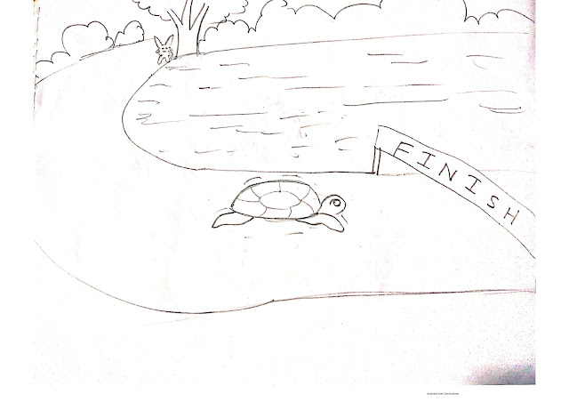

September 24,2020
A long time ago there was a small village called Haripur and there was a big lake next to that village. A tortoise lived under the calm water of the lake, and a rabbit lived with its young on the bank of the lake 
One morning when the sun was shining, the rabbit came out of the house to eat grass. After walking around for a while, he met a turtle. When he saw the tortoise moving very slowly, he became very curious. He called the tortoise and said, "Brother, why are you walking so slowly?" You can't walk as fast as me! If you walk so slowly, it will take you a day to cross this lake, and I will cross this lake in a moment.
In this way the rabbit continued to insult the tortoise. The tortoise was very upset. Their conversation slowly attracted all the animals around. They all started talking in favor of rabbits. Then the rabbit became so arrogant that he invited the tortoise to take part in a competition. All the animals in the vicinity supported the competition. The rabbit said that there was a palm tree on the other side of the field that you could see in the distance. The one who can reach that palm tree first will be declared the winner and all the animals near this lake will have to obey his word.
Everything was arranged like this and all the animals near the tank came together to watch the competition. This time the race between the two started. In a moment, the rabbit became wind in front of everyone's eyes, and the tortoise continued to crawl. After going a little farther, the rabbit thought that I had come a long way and that the palm tree would fall if I swallowed a little. And it's too late for rabbits to come here. Because he is walking so slowly that it will be his evening to come . By then I hadn’t taken a nap. Thinking this, the rabbit lay down under a tree and fell asleep. Meanwhile, the tortoise continued to suffer in the sun. He will lose, there is no way he can win .
But even then he continued because he could not bear the way everyone insulted him. As he walked along, he saw a rabbit lying in the shade of a tree on the side of the road. She continued to move forward without saying anything to him. Meanwhile, the rabbit did not even notice when he fell into a deep sleep. Suddenly a fruit from the tree fell on the rabbit's skin and the rabbit slowly got up. He remembered the competition and looked back to see how far the tortoise was but he could no longer see the tortoise . This time he looked ahead but could not see anything because the palm tree was still far away. Then the rabbit ran desperately but what else can be done, the tortoise has crossed the palm tree. On the other side of the road, everyone is a tortoise Rejoicing with. The rabbit was so embarrassed and decided in his heart that he would never insult or humiliate anyone like this again.
Advice: One should never think small
September 24,2020
We are all limited by our habits. In this story, a cat and horse make a deal to cross a river together to enjoy juicy corn in a field on the other side. But the cat's idiotic habits cause trouble and the horse must not only get them to safety but teach the cat a lesson.... READ MORE
September 24,2020
There was a village called Ratanpur where everyone was having a very good day. Ramen is a resident of that village. Ramen was sleeping then suddenly in the morning his wife shouted and called him to come to the next room. Ramen got up and came to the next room and saw that his daughter's hair had been cut short. Her daughter was very sad because her hair was gone. To alleviate her grief, her neighbors came to visit her every day to comfort her.... READ MORE